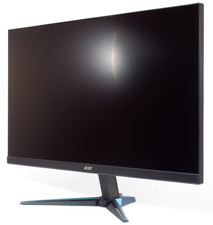
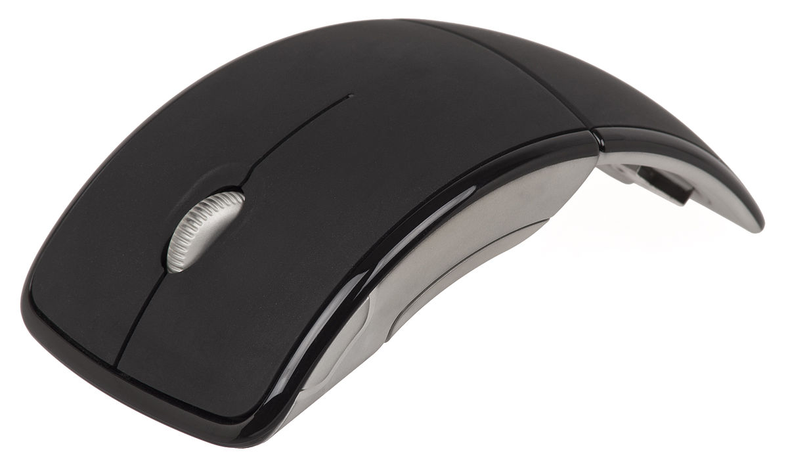
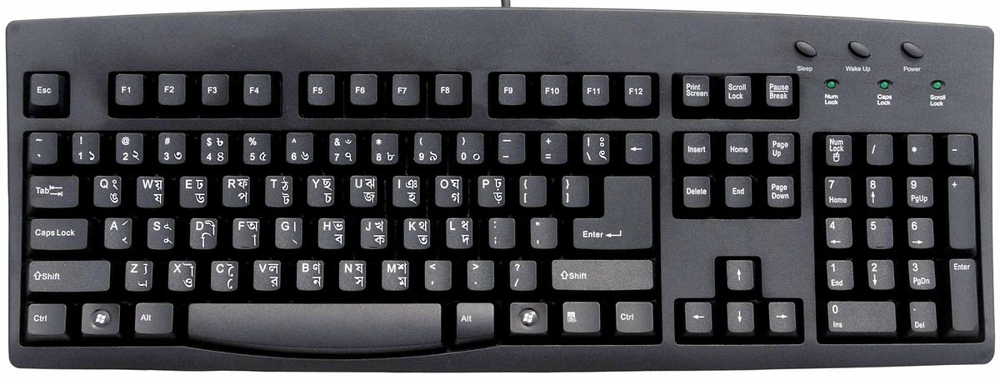

| №1 |  | Моніто́р (monitor — слідкувати) або дисплей (display — відображувати) — електронний пристрій для відображення інформації. ... Сучасні монітори бувають кількох типів: на основі електронно-променевої трубки (CRT). рідкокристалічні (LCD, TFT як підвид LCD) |
| №2 |  | Комп'ютерна миш - один із вказівних пристроїв введення (англ. pointing device), який дає змогу користувачеві через інтерфейс взаємодіяти з комп'ютером |
| №3 |  | Клавіатура - пристрій, що дозволяє користувачеві вводити інформацію в комп'ютер (пристрій введення). Являє собою набір клавіш (кнопок), розташованих в певному порядку. |